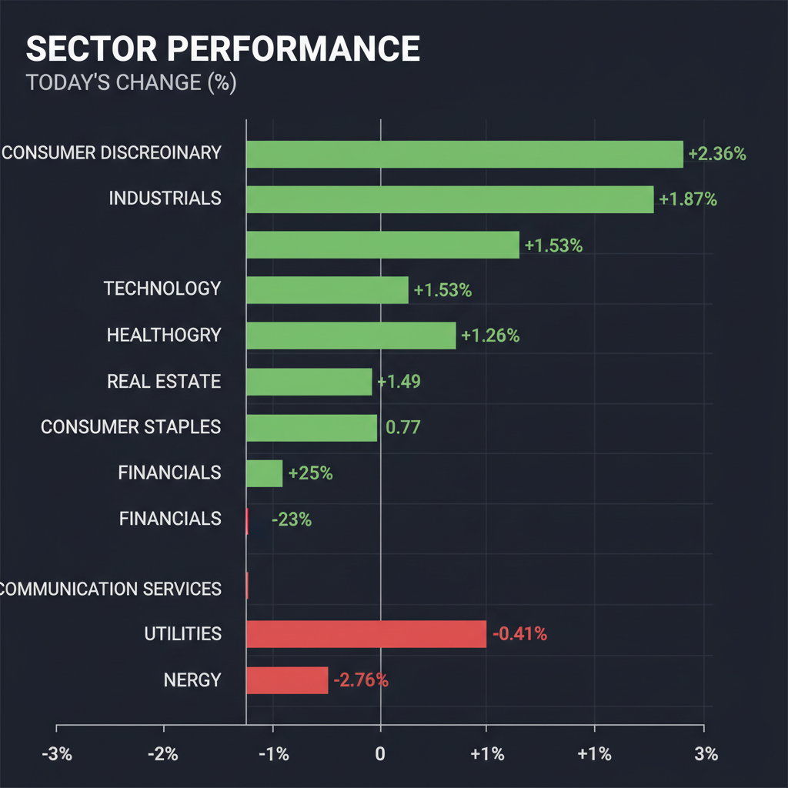
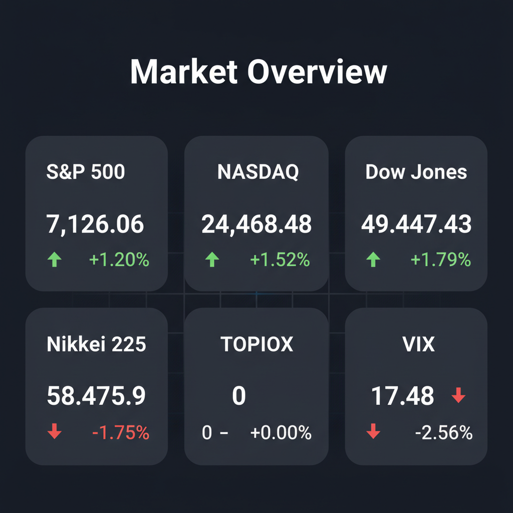

Daily Investment Report - 2026-04-18
Generated: 2026/4/18 7:21:31


1. エグゼクティブサマリー
- 米国市場はホルムズ海峡「開放」の報道を好感して買い戻しが急加速している一方、日本市場は高値警戒感からの利益確定売りに押され、ボラティリティが高まっています。
- 資源高騰によるインフレ第2波と高金利の長期化懸念がくすぶる中、市場は一部の大型株に資金を避難させており、全体の過熱感とテールリスクの過小評価に警戒が必要です。
- 投資戦略としては、現金比率を高めてリスクを限定しつつ、巨大な市場成長（TAM）と強力な価格転嫁力を持つ「質の高い隠れた中小型株」の押し目を拾うスタンスが推奨されます。
2. 注目銘柄リスト
強気（買い推奨）
- Energy Recovery, Inc. (ERII) [時価総額: 約$1B]: 海水淡水化プラントの圧力交換器で世界シェア60%以上を握り、極めて高い利益率と水インフラ需要の恩恵を直接受ける黒字のテンバガー候補であるため。
- トリケミカル研究所 (4369) [時価総額: 約1,000億円]: 最先端AI半導体の製造に不可欠な「高誘電率絶縁膜材料」で圧倒的シェアを持ち、AI需要の爆発的成長を裏方として享受できるため。
- インフロニア・ホールディングス (5076) [時価総額: 約3,000億円]: 水処理大手「水ing」の買収により、インフレ下でも価格転嫁が容易で安定したキャッシュフローを生み出す公共インフラ事業の飛躍的拡大が見込めるため。
- LCI Industries (LCII) [時価総額: 約$2.5B]: 競合との対等合併協議が進んでおり、実現すればRV部品業界における重複コストの削減と購買力強化により劇的な利益率の改善が期待できるため。
中立（様子見）
- LanzaTech Global, Inc. (LNZA) [時価総額: 約$500M]: 独自の技術で持続可能な航空燃料（SAF）を生成し、中東依存脱却の特大テーマに乗るものの、高金利環境下での資金繰りリスクが懸念されるため。
- 資生堂 (4911) [時価総額: 約1.6兆円]: テクニカル面では長期ダウントレンドを抜け底打ちの買いシグナルが点灯している一方、中国事業の不振による利益率低下というファンダメンタルズの懸念が払拭しきれていないため。
弱気（警戒）
- Badger Meter (BMI) [時価総額: 約$4.5B]: 第1四半期の決算ミスで株価が急落し、テクニカル的なサポートラインも割り込んでいるため、高いバリュエーションの調整（マルチプル・コンストラクション）が続く恐れがあるため。
- ニデック (6594) [時価総額: 約3.8兆円]: 不正会計問題の報道によりガバナンス・ディスカウントが長期化し、将来のフリーキャッシュフローの正確な見積もりが不可能なバリュートラップ状態であるため。
3. セクター推奨ランキング
マクロの不確実性下で資金が大型テック株に集中する中、そのサプライチェーンを支え、独占的技術で高いマージンを確保できる中小型の特殊材料・冷却技術企業に最大の成長余地があるため。
グローバルなサプライチェーンの再構築（フレンドショアリング）や水資源の防衛、M&Aによる業界再編の動きが活発化しており、持続的な資金流入と収益性の改善が期待できるため。
足元の決算で地政学ショックへの耐性が確認されたことに加え、高金利環境の長期化が純金利マージン（NIM）を下支えするため、ディフェンシブなバリュー投資先として機能するため。
500億ドルの原油喪失などファンダメンタルズの供給懸念は強烈ですが、テクニカル面では強い下落トレンドが続いており、中東情勢のヘッドラインで乱高下するため、打診買いはチャートの底打ち確認後に行うべきであるため。
コモディティ主導のインフレ再燃と米長期金利の高止まりが最大の逆風となり、金利敏感で資金調達コストの上昇に弱いこれらのセクターは資金流出リスクが高いため。
4. 今週の注目イベント
- 今週：米国3月小売売上高の発表（ガソリン高騰の影響と消費者心理のバランスを確認）
- 今週：日本3月全国消費者物価指数（CPI）の発表（政府のエネルギー価格抑制策の効果とインフレ圧力を確認）
- 今週：日米主要企業の四半期決算発表の本格化（インフレ下での価格転嫁力と利益率の維持能力に注目）
5. リスク要因
- スタグフレーション・ショックの到来： 原油、銅、ニッケル、肥料価格の高騰が数ヶ月遅れでCPIを直撃し、インフレ再燃と景気減速が同時に進行するリスク。
- ホルムズ海峡の実効封鎖による供給網麻痺： 「開放」宣言は偽りの平穏であり、IRGC（イスラム革命防衛隊）による突発的な海峡完全封鎖が起きた場合の原油価格急騰リスク。
- 集中投資とテールリスクの過小評価： VIX指数が17台まで低下し市場が油断する中、一部の超大型株に資金が集中しており、相関リスクの高まりによるフラッシュクラッシュ（急落）の危険性。
- 日経平均のテクニカルな天井形成： 心理的節目である6万円付近で強い利益確定売りに押されており、明確に上抜けできずに「ダブルトップ」を形成してトレンドが転換するリスク。
6. アクションアイテム
- 現金比率の引き上げ： 市場の極端な過熱感と地政学的ブラックスワンに備え、利益が出ている大型株のポジションを一部確定し、現金比率を通常より高めに維持する。
- テールリスクヘッジの実行： VIX指数が低水準に抑え込まれている現在のタイミングを利用し、ポートフォリオの一部（5%未満）でプットオプションやVIX関連商品を仕込み、下値リスクを厳重に防衛する。
- 高品質な中小型株の選別投資： 市場のノイズに隠れて放置されている、圧倒的なシェアと価格転嫁力を持つ水インフラ（ERII等）や半導体材料（トリケミカル等）の中小型株を押し目で少しずつ拾う。
- 「落ちるナイフ」の回避： ファンダメンタルズが良好に見えるエネルギーセクター（XLE）や、決算ミスの銘柄（BMI）に対して値頃感でエントリーせず、チャート上の明確な反転シグナル（出来高を伴う底練り等）が出るまで待機する。